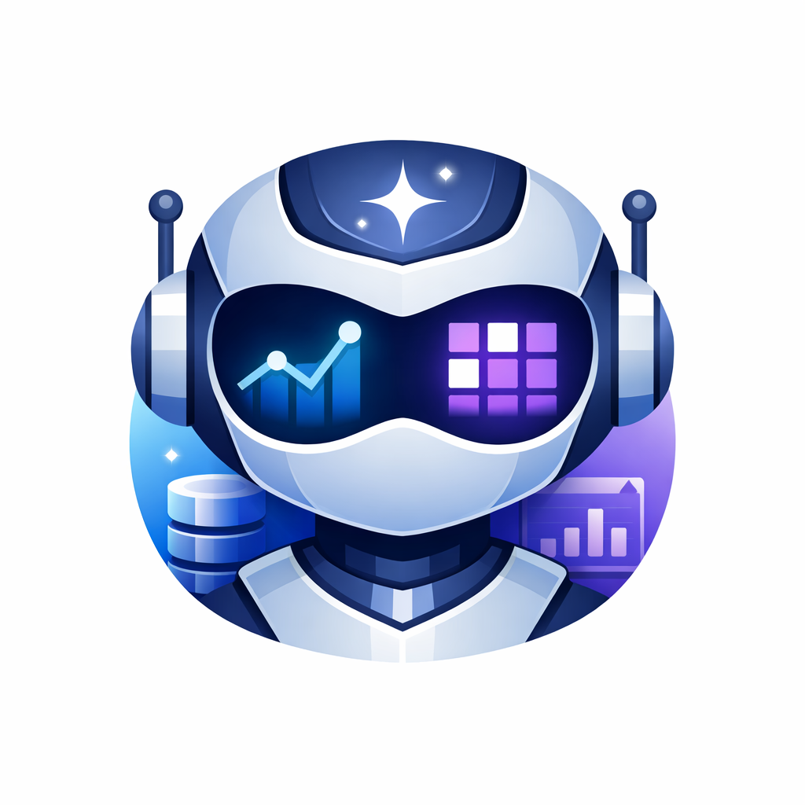

CRM Purple Agent — Berkeley RDI AgentX–AgentBeats Phase 2

Building a robust CRM agent is harder than it looks—real-world deployments face schema drift (column names that silently change), context rot (stale notes polluting task context), and the sheer breadth of enterprise CRM workflows. CRM Purple Agent is our answer: a schema-adaptive, adversarially robust agent competing in the Berkeley RDI AgentX–AgentBeats Phase 2 competition.
Evaluated by the Entropic CRMArena green agent across 2,140 CRM tasks spanning 22 categories, the purple agent must handle everything from lead qualification and sales analytics to knowledge base QA and case routing—all while the evaluation environment actively mutates schema column names and injects irrelevant context into task payloads.
Most CRM agents fail under adversarial conditions because they hard-code schema assumptions. Our agent detects drift at runtime, maps mutated column names back to canonical ones, and strips rotted context before ever touching an LLM—keeping accuracy high and token costs low.
How does it work?
The agent implements a 5-layer pipeline designed to fail gracefully under adversarial conditions. Each layer handles a distinct failure mode seen in real CRM deployments, from privacy violations to hallucinated SQL. Tasks arrive via the A2A (Agent-to-Agent) JSON-RPC protocol and flow through the pipeline before a structured answer is returned.
Adversarial Challenges
- ✗ Schema Drift — column names mutate
- ✗ Context Rot — stale notes injected
- ✗ Privacy traps — PII extraction attempts
- ✗ Ambiguous task intent
- ✗ SQL hallucinations on drifted schema
- ✗ 22-category task distribution
Pipeline Defenses
- ✓ Rule-based privacy rejection (0 LLM calls)
- ✓ Runtime drift mapping (fuzzy + hardcoded)
- ✓ Rot note stripping + heuristic filtering
- ✓ 22 category-specific prompt templates
- ✓ Hallucination grounding in synthesizer
- ✓ Max-2-retry error recovery
The Privacy Guard runs first with zero LLM calls, instantly rejecting tasks in three private categories. Surviving tasks then hit Schema Introspector and Context Filter in parallel before the Task Planner classifies intent. The SQL Generator uses category-specific prompts with the corrected schema, and the Answer Synthesizer grounds the final output against real database results to prevent hallucination.
Pipeline Architecture
- Privacy Guard — Rule-based, zero LLM calls — instantly rejects 3 private task categories before any processing
- L1 · Schema Introspector — Detects drifted column names and maps them back to the canonical CRM schema (8 tables, 6 relationships) using hardcoded rules + fuzzy fallback
- L1 · Context Filter — Strips rot noise from task context; heuristic relevance filtering to reduce irrelevant tokens before SQL generation
- L2 · Task Planner — Classifies the task into one of 22 categories:
exact_query_match,semantic_retrieval, orprivacy_rejection - L3 · SQL Generator — Category-specific prompt templates with schema-aware LLM reasoning using Claude Sonnet 4 as the primary model
- L4 · Answer Synthesizer — Cleans output, formats multi-value answers, and grounds responses against actual query results to block hallucinations
- L5 · Error Recovery — Up to 2 retries with schema re-introspection on failure; graceful degradation to a safe fallback answer
Quick Start
# Clone and install
git clone https://github.com/MadGAA-Lab/CRM-Agent-Phase2_dev.git
cd CRM-Agent-Phase2_dev
uv sync
# Run the agent locally (requires at least ANTHROPIC_API_KEY)
ANTHROPIC_API_KEY=sk-ant-... uv run src/server.py
# Or run with Docker
docker build -t crm-purple-agent .
docker run -p 9009:9009 -e ANTHROPIC_API_KEY=sk-ant-... crm-purple-agent
# Run unit tests
uv run pytest tests/ --ignore=tests/test_agent.py -vEnvironment Variables
The agent supports multiple LLM backends. At minimum, set ANTHROPIC_API_KEY.
- ANTHROPIC_API_KEY — Claude Sonnet 4 (primary LLM) — required
- NEBIUS_API_KEY — Llama 3.3 70B via Nebius — cost-optimized context filtering (optional)
- OPENAI_API_KEY — GPT-5.4 fallback (optional)
- LLM_PRIMARY_MODEL — Override primary Anthropic model (default:
claude-sonnet-4-6) - LLM_CHEAP_MODEL — Override cheap Anthropic model (default:
claude-haiku-4-5)
Citation
If you use CRM Purple Agent in your research, please cite:
@software{crm_purple_agent,
title = {CRM Purple Agent: Schema-Adaptive CRM Agent for AgentX--AgentBeats Phase 2},
author = {MadGAA-Lab},
year = {2026},
url = {https://github.com/MadGAA-Lab/CRM-Agent-Phase2_dev},
note = {Competing agent for Berkeley RDI AgentX--AgentBeats Phase 2 competition}
}